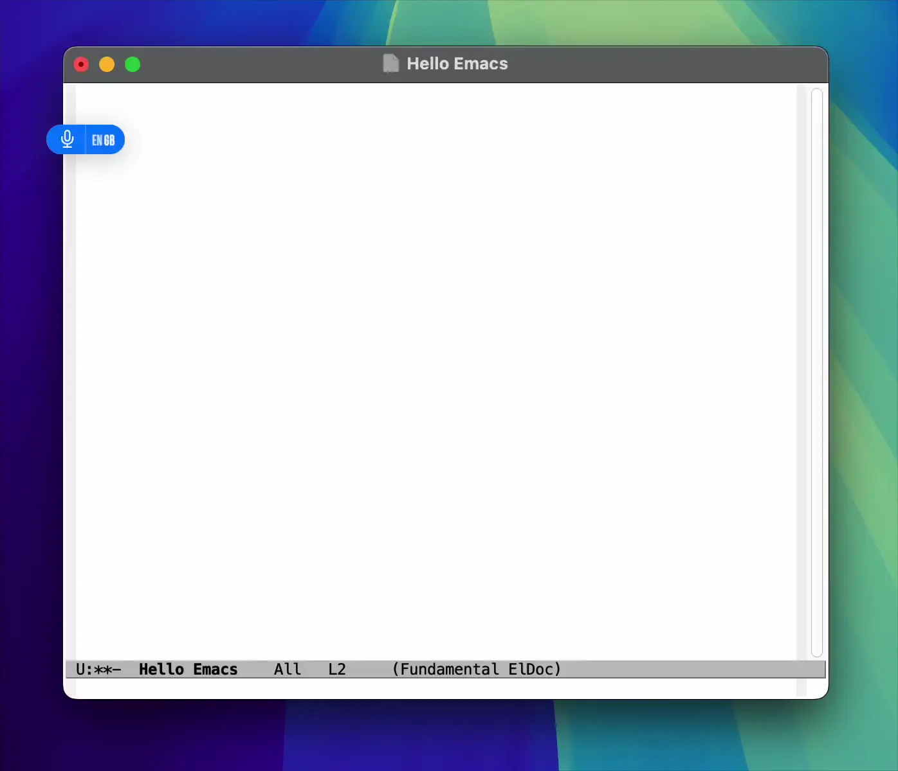
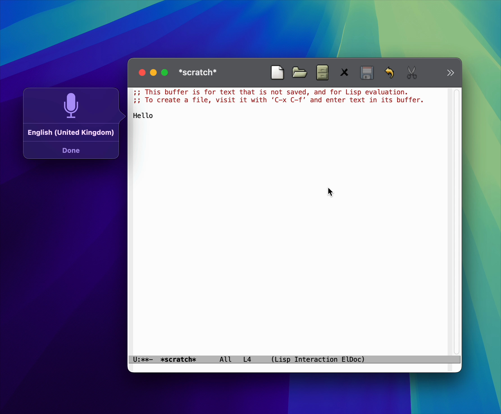
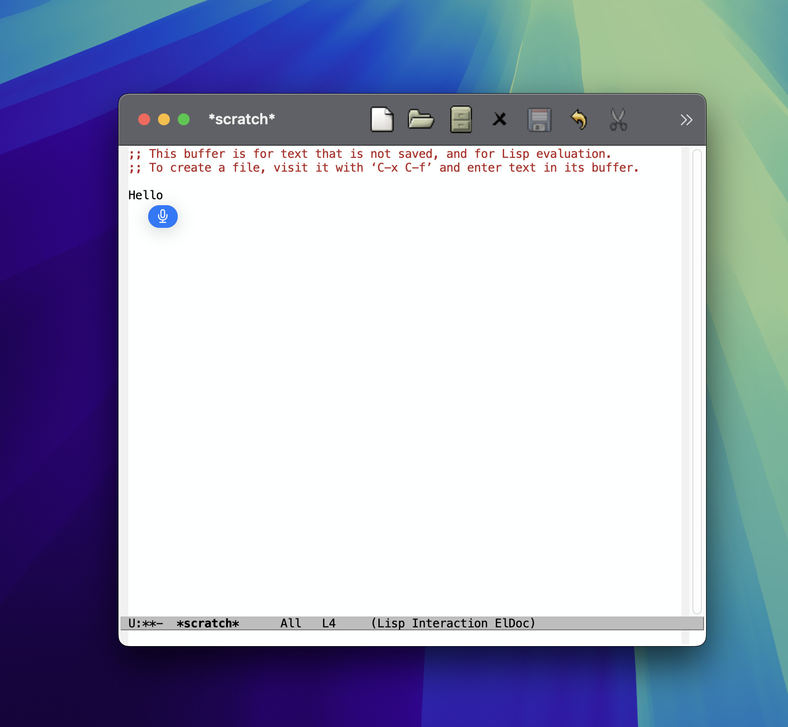

Álvaro Ramírez
macOS dictation returns to Emacs (fix merged)
macOS apps typically benefit from built-in voice dictation input (included as a macOS freebie), with little to no additional work required from app developers.

Emacs had supported this capability until relatively recently, when we began seeing reports that dictation was no longer available as of Emacs 30.
While I have no direct experience with macOS dictation-related APIs, I bisected Emacs 30 changes affecting macOS-related code (typically Objective-C code with .m file extensions). This led me to a seemingly harmless change introducing NSTextInputClient, intended to remove a deprecation warning. From that change onwards, dictation stopped working.
Reverting the change did indeed bring dictation back, but at the cost of re-introducing the deprecation warning. Looking closer at the current NSTextInputClient implementation, I noticed some stubbed-out methods. In particular, selectedRange stood out:
- (NSRange)selectedRange { if (NS_KEYLOG) NSLog (@"selectedRange request"); return NSMakeRange (NSNotFound, 0); }
Turns out implementing selectedRange is all it took to bring dictation back:
diff --git a/src/nsterm.m b/src/nsterm.m index 003aadb9782..2b34894f36e 100644 --- a/src/nsterm.m +++ b/src/nsterm.m @@ -7413,7 +7413,24 @@ - (NSRange)selectedRange { if (NS_KEYLOG) NSLog (@"selectedRange request"); - return NSMakeRange (NSNotFound, 0); + + struct window *w = XWINDOW (FRAME_SELECTED_WINDOW (emacsframe)); + struct buffer *buf = XBUFFER (w->contents); + ptrdiff_t point = BUF_PT (buf); + + if (NILP (BVAR (buf, mark_active))) + { + NSUInteger selection_location = point - BUF_BEGV (buf); + return NSMakeRange (selection_location, 0); + } + + ptrdiff_t mark = marker_position (BVAR (buf, mark)); + ptrdiff_t region_start = min (point, mark); + ptrdiff_t region_end = max (point, mark); + NSUInteger selection_location = region_start - BUF_BEGV (buf); + NSUInteger selection_length = region_end - region_start; + + return NSMakeRange (selection_location, selection_length); }
Implementing selectedRange didn't just bring dictation back, but now leverages a newer macOS dictation implementation. You can see the slight differences in UI.
Before

After

Merged upstream
I've since submitted a patch upstream. I'm happy to report that as of today, the patch is now merged into master. Thank you Gerd Möllmann and Eli Zaretskii for your help! Also big thanks to Stephen Englen, Fritz Grabo, @veer66 and @dotemacs on the fediverse who quickly jumped in to help validate the fix.
While we've yet to find out when the next Emacs release will ship, we at least know the fix is coming! If like me, you'd like to get the fix backported to Emacs 30, I've shown you how to do just that on Emacs Plus (my favourite macOS build).
Make it all sustainable
Glad macOS dictation is fixed? Enjoying this blog or my projects? I am an 👉 indie dev 👈. Help make my work sustainable by ✨sponsoring✨
Need a blog? I can help with that. Maybe buy my macOS/iOS apps too ;)